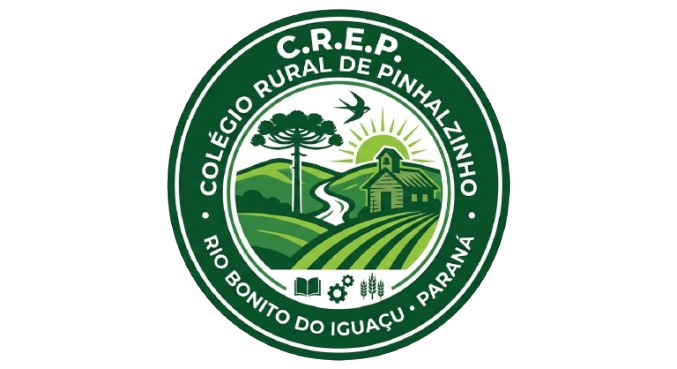

Minha primeira notícia
por: Ana Julia
O Colégio Rural Estadual de Pinhalzinho, está localizado em uma comunidade do interior de Rio Bonito do Iguaçú - Paraná. Entre os trabalhos desenvolvidos, destaca-se os índices alcançados nos últimos anos com o IDEB, a Prova Paraná e também a aprovação dos alunos formados em diversos vestibulares do estado.
